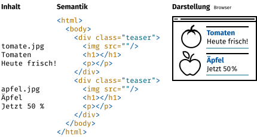
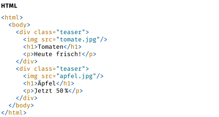
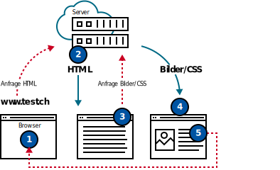
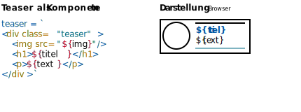
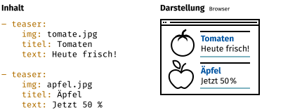

Erscheinungsdatum · 24. 6. 2019
Dieser Text ist von Stefan Huber unter der Lizenz CC-BY-SA 4.0 veröffentlicht. Publisher erhält das Recht die Inhalte ohne Copyleft (Share Alike) zu publizieren.
Bei der Interaktion mit einer Website erwarten User eine flüssige Reaktion des Interfaces. Seit einigen Jahren sind so genannte «Frontend-Frameworks» im Web stark verbreitet, so dass der Browser die Darstellung ab dem ersten Laden selber übernehmen kann, was ab da zu einem besseren Nutungserlebins führt.
Einhergehend mit der Entwicklung seines Hypertext-Formates HTML, schuf Tim Berners-Lee ab 1989 am CERN in Genf den ersten Webbrowser (gleichzeitig auch Web-Editor) mit dem Namen WorldWideWeb (später Nexus). Der Browser konnte zwar schon Sprungmarken (Links) und somit Information verknüpfen, jedoch war der Fokus primär in der Vermittlung und dem zugänglich machen von Information. Das heute so genannte «User Experience» (UX) war primär über den Inhalt und weder über die Gestaltung noch über die Interaktion bestimmt.
Bei der genaueren Untersuchung einer reduzierten HTML-Seite ist schnell zu erkennen, dass der Inhalt nur ein Teil der Seite ausmacht und die innere Struktur der Seite (Semantik) mindestens genau so wichtig ist. Zusammen mit dem Styling über CSS (cascading style sheets) wird dann die Darstellung errechnet.

Ausgeliefert wird klassisch jedoch nicht geteilt nach Daten und Struktur sondern in einer Kombination. Die HTML-Datei enthält Semantik und Inhalt.
Die Inhalte sind traditionell in einer Datenbank von der Redaktion abgespeichert worden und der Server fügt in die entsprechende Stelle im HTML diese Inhalte ein.

Das Beispiel zeigt im Wesentlichen folgende Strukturen:
<html/> <body/>)<div class="teaser"/>)<h1/>) je Tease<p/>) je Teaser<img/>) je TeaserTechnisch ist das abrufen von HTML-Websites in wenige Schritte gegliedert und auch heute werden noch viele Seiten meist wie folgt aufgebaut.

Da das zeitaufwändige laden der ganzen Website nach jedem Klick kein ideales User Experience erlaubt, werden heute gerne Semantik und Daten auseinander genommen. Die «Templates» (Semantik) für die Komponenten beinhalten auch das Styling und werden nur einmal vom Server übertragen. Wird die selbe Komponente später noch einmal benutzt, so werden nur die Daten ausgetauscht. Dies kann der Browser mit Hilfe eines so genannten «Frontend-Frameworks» selbständig tun und beim Sever müssen nur die Inhalte erfragt werden. Das spart Daten und es kann sehr schnell auf Eingaben des Benutzers ragiert werden. Auch das Konzept von «Seiten» ist aufgelöst. Eine neue Seite ist in so einem Framework nur noch eine Komponente die mit anderen Inhalten gefüllt wird. Auch wenn der Benutzer glaubt auf eine andere URL zu wechseln, so tauscht der Browser lediglich die Inhalte aus und das Grundgerüst der Website bleibt erhalten.
Vereinfacht könnte eine Komponente einer Seite so aussehen:
Und innerhalb dieser Seite wird dann die Teaser-Komponente mehrfach verwendet:

Um nun die vollständige Seite darzustellen (rendering) müssen nur noch die Daten in die jeweiligen Komponenten eingefüllt werden.

Dieses Verfahren hat insbesondere dann grosse Vorteile, wenn mehrere Seiten besucht werden, bei denen in den weiteren Seiten nur noch die Daten und nicht mehr die Templates geladen werden müssen.
Seit etwa 2010 sind die ersten Frontend-Frameworks (Backbone Framework) auf grossen Websites im Einsatz. Firmen wie Google (Angular Framework) oder Facebook (React Framework) haben ihre Produkte bereits grossflächig auf diesen neuen Technologien umgesetzt. Aber auch lokale Portale wie zum Beispiel werbewoche.ch nutzen diese Technologie aktiv. Da diese Frameworks von immer mehr Web-Entwicklern erlernt werden und das bessere User Experience vermehr von Kunden erfragt wird, darf man sich auch in Zukunft auf noch interaktivere und responsivere Seiten freuen.
Stefan Huber unterrichtet an der Schule für Gestaltung Zürich im Lehrgang HF Interaction Design und ist als Web-Entwickler tätig.